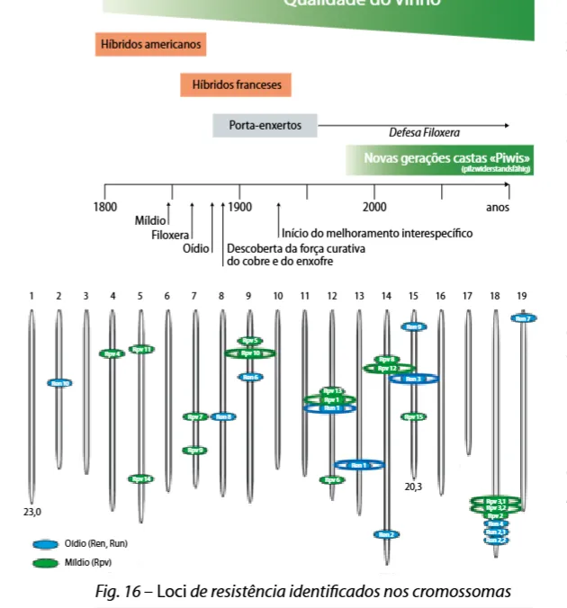
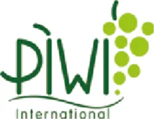

Capítulo 03 · Novo paradigma da política pública e científica europeia
Novo paradigma da política pública e científica europeia
No início do século XXI, a opinião pública começou a valorizar, cada vez mais, uma agricultura mais sustentável. Esta mudança refletiu-se também nas políticas europeias para o setor vitivinícola e impulsionou uma nova fase de inovação no melhoramento genético da videira. A França, que até então rejeitava oficialmente as castas resistentes às doenças, alterou a sua política devido à crescente pressão para reduzir o uso de pesticidas. Como resultado, o país tornou-se um dos pioneiros no desenvolvimento de programas de melhoramento genético, baseados em investigação científica, com o objetivo de criar castas mais resistentes e ambientalmente sustentáveis.
Novos dogmas com a política verde
No novo século, Portugal adotou uma orientação política singular relativamente ao melhoramento genético da videira. Durante aproximadamente uma década e meia, a inovação da proteção sanitária no material vitícola concentrou-se quase exclusivamente na promoção da “proteção
integrada”da vinha e na redução da utilização de produtos fitofarmacêuticos através de medidas agronómicas: técnicas de agricultura de precisão, monitorização digital das doenças, controlo biológico, utilização de feromonas para confusão sexual, aplicação de nanopartículas, bio-estimulantes e de outras tecnologias inovadoras. Por outro lado, noutros países, a administração e a ciência responderam ao desfio ecológico de forma mais aberta ao melhoramento interespecífico. O verdadeiro impulso para o melhoramento genético para resistência não resultou apenas do progresso científico, mas sobretudo de uma mudança do enquadramento jurídico e com uma “nova política verde” da União Europeia. Este processo terminou, finalmente, com o Regulamento (UE) n.º 2021/2117, em articulação com o Pacto Ecológico Europeu e a estratégia “Do Prado ao Prato”. As castas resistentes passaram a ser reconhecidas como um instrumento estratégico para reduzir a utilização de fungicidas, para adaptar a viticultura às alterações climáticas e promover uma produção vitivinícola mais sustentável.
Principais fundamentos jurídicos da União Europeia
que favoreceram o melhoramento genético para a resistência da videira no século XXI. Os principais instrumentos legislativos e estratégicos da União Europeia que enquadram e promovem o desenvolvimento de castas resistentes a doenças são os seguintes:
• Reforma da Política Agrícola Comum (PAC) 2000- 2013
– introduziu um novo enquadramento de apoio à inovação, à sustentabilidade e à competitividade da agricultura europeia, criando condições favoráveis ao investimento em investigação e o melhoramento genético vegetal, incluindo a videira.
• Regulamento (CE) n.º 1107/2009, relativo à coloca-
ção dos produtos fitofarmacêuticos no mercado – esta-
beleceu critérios mais rigorosos para a autorização de
substâncias ativas, conduzindo à redução progressiva
da disponibilidade de fungicidas e incentivando solu-
ções preventivas, entre as quais o desenvolvimento de
variedades geneticamente resistentes.
• Diretiva 2009/128/CE, relativa ao uso sustentável
dos pesticidas – determinou que os Estados-Membros
promovessem a Gestão Integrada de Pragas (GIP), pri-
vilegiando métodos preventivos, biológicos e genéti-
cos capazes de reduzir a dependência de tratamentos
químicos.
• Regulamento (UE) n.º 1308/2013, que estabelece
a Organização Comum dos Mercados (OCM) dos pro-
dutos agrícolas – passou a permitir, em princípio, a
classificação de castas provenientes de cruzamentos
entre Vitis vinifera e outras espécies do género Vitis,
mantendo apenas a exclusão das antigas castas pro-
dutoras diretas (como Noah, Isabelle, Clinton, Othello e
Jacquez). Esta alteração removeu um importante obs-
táculo jurídico ao desenvolvimento e à utilização de
novas castas resistentes.
• Preparação do Pacto Ecológico Europeu (Euro-
pean Green Deal), em 2019 – definiu como prioridade
política a redução substancial da utilização e do risco
associado aos produtos fitofarmacêuticos, criando um
contexto favorável à adoção de variedades resistentes.
• Estratégia "Do Prado ao Prato" (Farm to Fork Stra-
tegy – COM (2020) 381) – estabeleceu como objetivo
reduzir em 50%, até 2030, o uso de pesticidas aplicados
na agricultura.
• Regulamento (UE) 2021/2115, relativo aos Planos
Estratégicos da PAC – reforçou o apoio financeiro à
inovação, à sustentabilidade e à adaptação às alte-
rações climáticas, permitindo aos Estados-Membros
financiar projetos de investigação, desenvolvimento
e demonstração no domínio do melhoramento gené-
tico, designadamente através dos programas PEPAC,
Horizonte Europa e outros instrumentos europeus.
• Regulamento (UE) 2021/2117, que alterou a Orga-
nização Comum do Mercado Vitivinícola – passou a
permitir, sob determinadas condições, a utilização de
castas provenientes de cruzamentos interespecíficos
na produção de vinhos com Denominação de Origem
Protegida (DOP) e Indicação Geográfica Protegida
(IGP). O regulamento refere expressamente a neces-
sidade de favorecer castas com maior resistência às
doenças e melhor adaptação às alterações climáticas.
• Planos Estratégicos da PAC (desde 2023) – passa-
ram a apoiar financeiramente projetos de inovação,
seleção e melhoramento genético, incluindo progra-
mas de desenvolvimento de castas resistentes. Nos
respetivos considerandos é salientada a necessidade
de disponibilizar aos viticultores material vegetal com
maior resistência às doenças e melhor adaptação às
condições climáticas futuras.
• Regulamento UE 2026/1138 de junho. Aprovação
de novos clones resistentes de videiras transforma-
dos geneticamente. Na prática, este novo enquadra-
mento representou a superação, ao nível da política
europeia, de um tabu que durante décadas limitou a
redução de pesticidas na vinha.
Neste contexto, o desenvolvimento e a utilização de castas vitícolas resistentes constituem um dos instrumentos mais coerentes e eficazes para concretizar os objetivos definidos pela União Europeia em matéria de sustentabilidade, inovação e adaptação da agricultura às futuras exigências ambientais e climáticas.
Primeira Fase de enquadramento em Portugal
Portugal integra-se plenamente, na fase acima descrita, no âmbito do enquadramento jurídico da União Europeia aplicável ao setor vitivinícola, assegurando a implementação das disposições relativas ao melhoramento genético de novas castas resistentes, à certificação do material de propagação e à organização do mercado vitivinícola. Neste contexto, destacam-se, em particular:
• A gestão do Catálogo Nacional de Variedades de
Videira (CNVV), pela Direção-Geral de Alimentação
e Veterinária (DGAV), enquanto autoridade nacional
Quadro 1. Quadro cronológico das medidas de adaptação às alterações climáticas
Técnicas de poda e condução Irrigação deficitária Gestão dos solos Manutenção do coberto vegetal Técnicas enológicas
Técnicas de adaptação
Tempo e técnicas de vindima A curto prazo Período de aplicação
competente para a admissão e certificação do material
vitícola; a casta resistente Defensor (b), JBP/PLANSEL,
inscrita por despacho n.º 3040/2020 no CNVV.
• O exercício das competências técnicas e regulamen-
tares do Instituto da Vinha e do Vinho (IVV) na coorde-
nação da política vitivinícola nacional e na aplicação
da regulamentação europeia ao setor deu autorização
a um campo determinado a favor de experimentação
com este tipo de material; contudo, a utilização da
casta Defensor para produção comercial de vinho per-
maneceu proibida.
• A implementação do regime jurídico relativo à pro-
dução, certificação e comercialização do material de
propagação vegetativa da videira (DL 194, de 2006),
não considera automaticamente a autorização de uvas
de castas inscritas no CNVV para a produção de vinho.
(Portaria nº 380/2012, de 22 de novembro.)
Assim, de forma algo paradoxal, Portugal continua a ser, até à data, o único Estado-Membro da União Europeia onde, apesar de estarem reunidas as condições técnicas, científicas e jurídicas necessárias, ainda não foi criado um enquadramento que permita concretizar, na prática, o espírito da legislação europeia relativamente à utilização de castas de videira geneticamente melhoradas por métodos de melhoramento vegetal. Esta prudência tem uma justificação legítima: evitar que a introdução indiscriminada de material vegetal insuficientemente avaliado, à semelhança do que ocorreu há cerca de um século com alguns híbridos franceses, possa comprometer a qualidade, a tipicidade e a imagem dos vinhos produzidos.
O quadro seguinte (adaptado de uma comunicação da ADVID, 2019, complementada por informação da Hochschule, Geisenheim University) ilustra de forma clara a evolução previsível da adoção do progresso científico pelo setor vitivinícola. A experiência internacional demonstra que a introdução de novas tecnologias deve ocorrer de forma gradual, monitorizada e cientificamente documentada, permitindo validar cada fase de transição antes da sua aplicação em larga escala.
Genética: castas/porta-enxertos Zonagem (translocação da vinha) Lineamento e canopia
A médio prazo A longo prazo
Importa esclarecer um aspeto fundamental. Nas
próximas décadas, as iniciativas apresentadas na tabela acima poderão permitir, através de medidas agronómicas adequadas, preservar o conjunto de castas historicamente estabelecido. No entanto, tal implicará custos e riscos progressivamente maiores.
Por esta razão, embora o melhoramento genético da videira não deva assumir um carácter prioritário ou exclusivo, é essencial iniciá-lo desde já de forma sistemática
e contínua. Trata-se de um processo extremamente longo. Se este trabalho não for desenvolvido atempadamente, poderão não existir alternativas varietais concretas quando novas características – sobretudo uma maior adaptação às futuras condições climáticas e ambientais – se tornarem indispensáveis para uma viticultura sustentável e economicamente viável. Esta necessidade de antecipação aplica-se igualmente à silvicultura e, de forma crescente, a outros setores da produção alimentar.
A própria experiência obtida em Portugal confirma a necessidade de assegurar que existam ensaios de campo que comprovem a adaptação agronómica e enológica regional dessas castas. Os primeiros ensaios de campo realizados no âmbito do programa AGRO 2.4, no início deste século, demonstraram que muitas das castas PIWI internacionais então disponíveis, sobretudo as tintas, apresentavam mesmo graves limitações na sua adaptação
às condições edafoclimáticas portuguesas, por potencial qualitativo insuficiente para responder às exigências do vinho português.
1. Um novo espírito técnico-científico com a obtenção “PIWI”
Na Agenda de Inovação para a Agricultura, programa
Portugal 2030, a estratégia nacional promove a viticultura de precisão, a agricultura regenerativa e outras práticas destinadas a reduzir a pegada ecológica e a dependência de produtos fitofarmacêuticos. Contudo, importa salientar que a Agenda de Inovação não faz qualquer referência explícita a áreas atualmente consideradas estratégicas
para o melhoramento genético da videira, como a seleção assistida por marcadores moleculares (MAS), a seleção genómica, a Cisgénese, a edição genética (CRISPR/Cas), o melhoramento para resistência a doenças ou o desenvolvimento de castas resistentes (PIWI). Mas, desde 2019, estas tecnologias têm sido objeto de financiamento público através de diversos programas de investigação e inovação, nomeadamente o PDR 784, o PEPAC C.115 e, mais recentemente, o projeto VitiSafe, financiado pelo Programa Regional Alentejo 2030 (CCDR Alentejo/FEDER).
Esta situação demonstra que, embora estas áreas ainda não estejam refletidas de forma explícita na estratégia política nacional, são já reconhecidas pelas entidades financiadoras como domínios prioritários para a inovação e para a competitividade futura da viticultura portuguesa. Finalmente, o atraso no apoio permitiu ao projeto PIWI - PLANSEL basear-se nos resultados concretos das inovações significativas existentes, com a estratégia francesa acima descrita, denominada“RESDUR”, com um atraso, mas dentro das margens climáticas e ecológicas.
1995-2010 – O significativo salto de inovação deste período resultou do esforço de cooperação transfronteiriça entre o INRA de Colmar, o então Instituto Federal de Investigação em Viticultura de Geilweilerhof (atualmente integrado no Julius Kühn-Institut – JKi), o Staatliches Weinbauinstitut Freiburg (Instituto de Viticultura de Friburgo) e a estação suíça de investigação Agroscope, com o objetivo de integrar num programa comum (RESDUR) os conhecimentos, metodologias e resultados de melhoramento desenvolvidos nas principais instituições europeias de investigação vitivinícola.
No início do século XXI, o INRA de Colmar (França) e o JKi-Geilweilerhof (Alemanha) encontravam-se já numa fase avançada da cartografia genética das resistências e da seleção assistida por marcadores moleculares (MAS – Marker-Assisted Selection). Contudo, a sequência completa dos próprios genes de resistência ainda não era bem-sucedida. No final da década de 1990 e no início da década de 2000, Rudolf Eibach, em colaboração com Erik Zyprian e outros investigadores, trabalhou principalmente com marcadores SSR (Simple Sequence Repeats) para identificar regiões cromossómicas (loci) associadas às diferentes resistências, e não com a sequenciação dos genes de resistência propriamente ditos.
Apesar desta limitação, foi possível identificar marcadores moleculares fortemente ligados aos genes de resistência. Devido à estreita ligação genética entre esses marcadores e os respetivos genes, tornou-se viável determinar de forma fiável os diferentes tipos de resistência através da seleção assistida por marcadores (MAS), acelerando significativamente os programas de melhoramento genético e reduzindo a necessidade de avaliações fenotípicas demoradas em condições de campo.
Esta estratégia permitiu aumentar significativamente a durabilidade e a robustez da resistência, conduzindo ao desenvolvimento de uma nova geração de castas resistentes com um nível de proteção consideravelmente superior e mais estável face à evolução dos agentes patogénicos.
Em França, durante décadas, o único investigador da INRA, devido às fortes restrições regulamentares com a reduzida aceitação dos híbridos, iniciou uma abordagem científica verdadeiramente inovadora. Entre 1968 e 1969, Alain Bouquet, do Institut National de la Recherche Agronomique (INRA), em Bordéus, estabeleceu um programa sistemático de introgressão genética baseado em tecnologia e Germoplasma provenientes da University of California, Davis. O material utilizado incluía descendentes da espécie Muscadinia rotundifolia Michx., geneticamente muito distante de Vitis vinifera devido ao diferente número cromossómico (2n = 40 em Muscadinia versus 2n = 38 em Vitis), circunstância que, durante muito tempo, foi considerada um obstáculo praticamente intransponível ao melhoramento convencional. O Dr. Didier Merdinogolu estava responsável pela identificação molecular do processo. O genótipo NC 6-15 revelou-se particularmente determinante, por constituir a fonte dos dois primeiros genes de resistência de grande efeito, posteriormente identificados e amplamente utilizados nos programas internacionais de melhoramento:
Run1, que confere resistência praticamente completa ao oídio (Erysiphe necator); e Rpv1, associado à resistência ao míldio (Plasmopara viticola). Esta acumulação de genes permite desenvolver uma nova geração de castas resistentes às doenças. Estas castas são muito semelhantes às variedades tradicionais da Vitis vinifera e produzem vinhos que cumprem os elevados padrões de qualidade da viticultura europeia.
Este enquadramento evidencia o papel pioneiro da PLANSEL des empenhado pela viticultura portuguesa neste domínio. Importa igualmente salientar que apenas no início do século XXI se verificou uma profunda transformação tecnológica na seleção de plantas resistentes, através da intro-
Quadro 2. História do Melhoramento interespecífico

dução da Seleção Assistida por Marcadores Moleculares
(MAS – Marker Assisted Selection).
A transferência da tecnologia foi possível com um contrato interinstitucional entre o viveiro PLANSEL e o Instituto Nacional de Inovação Vitícola da JKi (Julius Kühn Institut) Geilweiler Hof e foi documentado pelo então Vice-presidente Dr. Rudolf Eibach na forma de um Workshop em Montemor-o-Novo, em 2017. (Os dois painéis ilustrativos foram parte da Apresentação do Dr. R. Eibach (JKi Fig. 15 – Dr. R. Eibach, Vicepres Geilweilerhof, 2017, em Monte- da JKi Geilweilerhof. mor-o-Novo, na PLANSEL).
Estes genes constituíram a base da moderna estratégia de piramidagem de genes de resistência e marcaram o início de uma nova geração de castas resistentes, geneticamente muito próximas de Vitis vinifera e plenamente compatíveis com os padrões qualitativos da viticultura europeia.
Os Viveiros PLANSEL basearam o seu programa de melhoramento na utilização de progenitores multirresistentes, disponibilizados sob a forma de pólen, permitindo a introgressão simultânea de vários genes de resistência em castas autóctones portuguesas de elevado interesse enológico. Esta estratégia possibilitou obter combinações de multirresistência logo nas primeiras gerações de cruzamento, reduzindo significativamente a necessidade de sucessivos retrocruzamentos destinados à piramidagem dos genes de resistência.
Genes de resistência ao míldio (Plasmopara viticola):
• Rpv1 – gene de resistência derivado de Muscadinia
rotundifolia, que confere uma elevada resistência ao
míldio.
• Rpv3 – um dos genes de resistência mais utilizados
internacionalmente, contribuindo para limitar a infe-
ção e o desenvolvimento do patógeno.
Perspetivas de futura introgressão (por cruzamento convencional ou, quando legal e tecnicamente possível, por edição genómica):
• Rpv10 e Rpv12 – genes de resistência derivados de
Vitis amurensis, associados a um elevado nível de resis-
tência ao míldio. A sua introgressão por cruzamento
encontra-se em desenvolvimento.
Genes de resistência ao oídio (tipos distintos de virulência
Erysiphe necator):
• Run1 – gene de resistência originalmente prove-
niente de Muscadinia rotundifolia, que confere um ele-
vado nível de resistência ao oídio.
• Ren3 e Ren9 – genes de resistência parcial que,
quando combinados, aumentam significativamente a
durabilidade e a eficácia da resistência.
Perspetivas de futura introgressão de resistência a outros agentes nocivos (por cruzamento convencional ou, quando legal e tecnicamente possível, por edição genómica):
• Rgb1 – gene de resistência à podridão negra (black
rot), causada por Guignardia bidwellii.
• PdR1 – gene de resistência à doença de Pierce (Pier-
ce's disease), provocada pela bactéria Xylella fastidiosa.
A estratégia da PLANSEL consiste em ampliar progressivamente este conjunto de genes de resistência, combinando-os em genótipos de tipicidade Vitis vinifera, de forma a aumentar a estabilidade da resistência, reduzir a dependência de produtos fitofarmacêuticos e preparar a viticultura portuguesa para futuros desafios fitossanitários e climáticos.

Reconhecimento público das novas castas resistentes
Em 1999, Pierre Basler fundou, na Suíça, uma associação dedicada às castas de videira resistentes a doenças fúngicas, reunindo investigadores, obtentores, viveiristas, viticultores e produtores de vinho empenhados no desenvolvimento e utilização destas novas variedades. Em 2004, foi solicitado o registo da marca PIWI, que passou a identificar a associação e, progressivamente, uma nova categoria de castas e vinhos.
A designação PIWI deriva do conceito de pilzwiderstandsfähige Rebsorten, ou seja, castas de videira resisten-
tes a doenças fúngicas. Constitua-se, por isso, esta organização como instituição dedicada a ser porta-voz de uma nova categoria de material vitícola.
Atualmente, muitos dos principais obtentores europeus estão ligados à PIWI International. Em Portugal, o viveiro PLANSEL Lda. integra esta rede. A associação reúne igualmente viveiristas, explorações vitivinícolas e adegas, bem como organizações e instituições de referência europeias. Entre os seus membros ou parceiros encontram-se, entre outros, o Groupe ICV – L'Art & l'Expertise du Vin, em França, e a entidade alemã ligada à produção de material vitícola, e ainda o organismo oficial do registo de variedades agrícolas.
A PIWI International contribui para o reconhecimento destas novas castas através da divulgação de informação técnica, da existência de associações nacionais e, sobretudo, da promoção e valorização dos vinhos PIWI. Existem atualmente estruturas nacionais em países como a Alema-
nha, Itália, Suíça, Áustria, Chéquia, Espanha e Canadá. A organização dispõe ainda de uma plataforma internacional de informação, onde são apresentadas respostas às questões com castas PIWI.
Concursos e reconhecimento dos vinhos PIWI
Os concursos de vinho têm um papel importante na criação de confiança junto dos profissionais, distribuidores e consumidores. Entre as iniciativas relevantes destacam-se:
PIWI International Wine Challenge – Valtice, Ché-
quia: um dos principais concursos europeus especializados em vinhos produzidos a partir de castas resistentes, com participação internacional e avaliação por júri profissional.
Concorso Enologico Internazionale Città del Vino –
Itália: concurso internacional que integrou uma distinção específica para vinhos PIWI, aumentando a sua visibilidade no contexto da produção vitivinícola europeia.
Deutscher PIWI-Weinpreis – DLG × PIWI Deuts-
chland: desde 2025, um concurso nacional alemão dedicado especificamente aos vinhos PIWI, contribuindo para o seu reconhecimento comercial e qualitativo.
Paralelamente, a participação em concursos internacionais generalistas de grande prestígio, como os Decanter
World Wine Awards, é particularmente importante. Nestes concursos, o objetivo é demonstrar que um vinho PIWI pode ser avaliado no contexto internacional.
Este reconhecimento crescente demonstra que as castas PIWI devem ser consideradas não apenas como uma solução técnica para reduzir tratamentos fitossanitários, mas como uma nova geração de castas capazes de combinar sustentabilidade, qualidade enológica e competi-
tividade, também com elevado potencial para a viticultura portuguesa.
A situação Internacional
Nos últimos vinte anos, diversos países europeus implementaram programas nacionais de avaliação e utilização de castas PIWI, designadamente: Alemanha Desde anos 70 do século passado, a estação nacional Bundesforschungs-Anstalt Geilweilerhof, (hoje Julius Kühn-Institut) e os institutos federais Institut für Rebzucht (Universidade de Geisenheim) e os institutos vitivinícolas de Freiburg e Weinsberg empenharam-se em iniciativas de obtenção de castas novas resistentes ao míldio e oídio:
• Cinco décadas de contínua investigação em intro-
gressão de resistência;
• Várias dezenas de castas oficialmente autorizadas;
• Forte expansão das áreas plantadas;
• Crescente utilização em viticultura biológica;
• Introgressão das resistências da Vitis Muscadínea
rotundifólia e V. Amorensis;
• Piramidagem por controlo MAS;
• Procura de progenitores com resistência homozigótica. França
• Iniciação do programa da piramidagem;
• Promoção a identificação molecular das resistências e
utilização sistemática de MAS;
• Criação do programa nacional OSCAR;
• Criação do primeiro programa de inovação PIWI, inte-
grativo RESDUR. Itália
• Programas regionais coordenados por universidades;
• Reconhecimento oficial em várias regiões. Suíça
• Utilização consolidada de castas resistentes;
• Redução significativa dos tratamentos fitossanitários;
• Integração em programas nacionais de sustentabili-
dade. Espanha
• As primeiras castas PIWI foram registadas para utili-
zação comercial em Espanha: Cabernet Eidos, Merlot
Khorus, Sauvignon Rytos e Soreli. Através da Ordem
APA/1422/2025, foi corrigida a respetiva designação
botânica, passando estas castas a ser oficialmente clas-
sificadas não apenas como Vitis vinifera L., mas como
híbridos interespecíficos do género Vitis.
• Paralelamente, diversos programas de melhoramento
genético, conduzidos por diferentes obtentores nas
principais regiões vitivinícolas espanholas, procuram
obter o reconhecimento oficial e a inscrição no catálogo
nacional de novas castas PIWI já internacionalmente
reconhecidas, adaptando-as às condições edafoclimáti-
cas e às exigências da viticultura espanhola.
• Entre estas iniciativas, destaca-se o programa de
melhoramento desenvolvido na Catalunha pela adega
Albet i Noya, em colaboração com diversos parcei-
ros científicos e institucionais, no âmbito do projeto
VRIAC – Varietats Resistents i Autòctones Adapta-
des al Canvi Climàtic. O objetivo estratégico deste
projeto não consiste na introdução de castas PIWI
estrangeiras, mas sim no desenvolvimento de versões
resistentes das principais castas autóctones catalãs,
preservando simultaneamente a sua identidade varie-
tal e tipicidade enológica. Entre as castas em desen-
volvimento incluem-se: Xarello, Macabeu, Parellada,
Garnatxa (Grenache) e Tempranillo, todas com
resistência genética às principais doenças fúngicas da
videira. Albet i Noya conta com progenitores resisten-
tes do colega suíço Valentin Blattner. Portugal O Programa PLANSEL/Universidade de Évora representa uma abordagem científica, gradual e baseada em dados objetivos para promover os importantes avanços da técnica e da ciência genética no século XXI. A PLANSEL apostou, desde o início, na transferência de tecnologia como elemento central da sua estratégia. Neste contexto, reativou a histórica colaboração com o JKi Geilweilerhof, iniciada no século passado, com o objetivo de retomar, em larga escala, os programas de melhoramento genético destinado ao desenvolvimento de castas portuguesas resistentes.
Graças à visão estratégica do então Ministro da Agricultura, Capoulas Santos, e, posteriormente, do atual Ministro, José Manuel Fernandes, foi possível ultrapassar um período de ausência de apoio institucional e assegurar financiamento para estes programas de melhoramento genético, primeiro através do PDR 2020, medida 784, e mais recentemente no âmbito do PEPAC, medida C115. Instituições científicas que contribuíram para o programa PLANSEL / Universidade de Évora: 1. Julius Kühn-Institut (JKi) – Alemanha
O JKi desempenhou um papel determinante no desen-
volvimento de marcadores moleculares para os genes
de resistência Run1, Ren3, Ren9, Rpv1, Rpv3, Rpv10,
bem como na obtenção de linhas homozigóticas resis-
tentes que foram disponibilizadas para o programa de
melhoramento da PLANSEL.
2. INRA / INRAE Colmar – França (indiretamente)
O INRAE de Colmar foi pioneiro na introgressão sistemá-
tica das resistências provenientes de Muscadinia rotun-
difolia em Vitis vinifera através de sucessivos retrocru-
zamentos.
Deste centro de investigação resultaram contributos
científicos fundamentais relativos aos genes Run1 e
Rpv1, bem como ao desenvolvimento da estratégia
de piramidação de genes de resistência. Estes traba-
lhos destacaram a posição pioneira do projeto RESDUR,
desenvolvido em estreita colaboração com o Julius
Kühn-Institut, do qual o programa PLANSEL beneficiou
de forma indireta.
Importância da tecnologia MAS para o melhoramento da videira
Antes da introdução dos marcadores moleculares, os melhoradores tinham de cultivar os híbridos durante cinco a oito anos, até à primeira frutificação, para poderem avaliar a presença de resistência e o seu potencial agronómico. Atualmente, os genes de resistência podem ser identificados já durante o primeiro ciclo vegetativo, através de análises de ADN.
Esta evolução permitiu:
• Eliminar precocemente até 90 % das plântulas sem
interesse;
• Reduzir significativamente o volume de cruzamento a
menos de 5% por utilização de progenitura com homo-
zigotia;
• Reduzir a área necessária para campos experimentais;
• Diminuir substancialmente os custos dos programas de
melhoramento;
• Acelerar de forma muito significativa o desenvolvi-
mento de novas castas;
• Tornar possível a combinação dirigida de vários genes
de resistência (piramidação de genes), aumentando
simultaneamente a durabilidade e a eficácia da resistên-
cia genética.
Enquadramento para a PLANSEL
Para o programa de melhoramento da PLANSEL é particularmente relevante o facto de, desde 2020, serem utilizados de forma rotineira marcadores moleculares para os loci de resistência Run1, Ren3, Ren9, Rpv1 e Rpv3, colocando o programa ao nível tecnológico dos mais avançados programas europeus de melhoramento de castas PIWI.
Neste contexto, assume particular importância o novo programa de investigação da Universidade de Évora – VITI- SAFE, que contribuirá para acelerar a introgressão e a piramidagem destes novos fatores de resistência em genótipos nacionais de Vitis vinifera, reforçando a competitividade e a sustentabilidade futura da viticultura portuguesa.
Justificação para Portugal
Portugal apresenta uma diversidade edafoclimática excecional, refletida na existência de numerosas regiões vitivinícolas com características muito diferenciadas; assim, a situação com a autorização de uma casta nova resistente, reconhecida no CNVV para produção de vinho deve ser observada em forma distinta e específica.
A mudança de orientação da política europeia relativamente às variedades novas interespecíficas e o seu reconhecimento pelas instituições europeias começou a tornar-se evidente em 1997, com a variedade “Regent”, na Alemanha. Cerca de 20 anos mais tarde, esta evolução estendeu-se também a França e ao Norte de Itália.
Portugal, que só em 2006 conseguiu avançar com o registo e a classificação oficial das suas próprias castas autóctones (problemas com o reconhecimento da seleção sanitária e monoclonal da parte de um setor do ensino profissional) no Catálogo Nacional de Variedades de Videira (CNVV), teve inicialmente dificuldades em acompanhar esta nova orientação da União Europeia relativamente às variedades novas ecologicamente mais sustentáveis.
De forma clara e inequívoca, no dia 5 de dezembro de
2018, a Eng.ª Kátia Teixeira, da entidade competente, a DGAV – Direção-Geral de Alimentação e Veterinária – apresentou, num congresso da ADVID – Associação para o Desenvolvimento da Viticultura Duriense – a situação jurídica aplicável em Portugal. A homologação de castas resistentes, nos termos dos artigos 13.º e 30.º do Decreto-Lei n.º 194/2006, está sujeita às condições previstas para a inscrição de uma nova variedade no Catálogo, estabelecidas no Capítulo II do mesmo diploma. Entre essas condições encontram-se:
• Destino da produção:
– vinho (deve cumprir a respetiva OCM);
– uva de mesa;
– produção de porta-enxertos.
• A variedade deve ser distinta, suficientemente homo-
génea e estável (DHE).
• A variedade deve apresentar um valor agronómico e
de utilização satisfatório (VAU).
• O estado sanitário da variedade deve cumprir as exi-
gências previstas na legislação em vigor, nomeada-
mente no que respeita a organismos de qualidade e de
quarentena.
• Deve existir uma seleção de manutenção.
• Caso se trate de um OGM, deve ser cumprida a legisla-
ção específica aplicável.
A CNEVV é a comissão prevista no âmbito da DGAV pela decisão sobre a inscrição de uma variedade no Catálogo Nacional de Variedades de Videira. Embora o IVV – Instituto da Vinha e do Vinho – esteja representado na CNEVV, existe uma segunda lista, gerida pelo próprio IVV, ao abrigo da Portaria nº 380/2012, que estabelece o enquadramento nacional para a autorização geral de uma nova casta. Posteriormente, regulamentações regionais específicas – por exemplo, a Portaria nº 223/2020, no caso de Trás-os-Montes – determinam quais dessas castas podem ser utilizadas regionalmente na produção de vinhos com Denominação de Origem Protegida (DOP) ou Indicação Geográfica Protegida (IGP).
Por sua vez, o IVV não toma de forma autónoma a
decisão sobre a autorização geral de novas castas, independentemente de se tratar de variedades já autorizadas noutros países europeus ou de novas variedades nacionais reconhecidas no CNVV. Por razão política, a decisão sobre estas autorizações é submetida ao Conselho Consultivo do
IVV.
Após vários anos de esforços, a PLANSEL-JBP conseguiu, em 2020, inscrever a variedade Defensor no CNVV, através do Despacho nº 3040/2020 da DGAV. No entanto, o pedido posterior para a sua utilização na produção de vinho junto do IVV não teve seguimento favorável devido a uma objeção apresentada pela ACIBEV – Associação de Vinhos e Espirituosas de Portugal. Até hoje, o IVV não pôde conceder o respetivo reconhecimento.
Em Portugal nenhuma nova variedade de videira resistente (PIWI) foi reconhecida para a produção de vinho (exceção: as castas Chamboursin, híbrido francês, castas base da maioria das castas PIWI hoje na EU) . Na realidade, a posição apresentada pela ACIBEV baseia-se numa exigência, que a PLANSEL aceita plenamente: antes da autorização de uma nova variedade interespecífica, devem ser realizadas plantações experimentais (Diretiva 2001/18/CE), de modo a avaliar de forma aprofundada a sua adaptação e aptidão nas diferentes regiões. Os respetivos resultados deverão ainda ser disponibilizados publicamente através de uma plataforma acessível (A ACIBEV refere o exemplo da França com o programa OSCAR.) As iniciativas da PLANSEL descritas nos capítulos a seguir – nomeadamente a introdução de 42 variedades de videira estrangeiras e a avaliação de mais de 200 candidatos nacionais a novas variedades resistentes – representam uma tentativa de responder precisamente a esta exigência apresentada pela ACIBEV. Contudo, a PLANSEL continua a aguardar que o IVV estabeleça de forma clara as condições e os procedimentos aplicáveis ao processo de reconhecimento e autorização. A PLANSEL considera que poderão ainda ser necessários mais de dez anos até que, no âmbito das regras legalmente estabelecidas para a autorização – nomeadamente o Regulamento (UE) n.º 1308/2013, artigo 81.º, e o Decreto-Lei n.º 194/2006 –, Portugal consiga levar o atual conjunto de novas variedades resistentes a um nível de desenvolvimento e avaliação que permita o seu reconhecimento para a produção de vinho. Este processo encontra-se, contudo, comprometido pela reclamação apresentada no âmbito do Conselho Consultivo, que permanece pendente há cinco anos.
Carta da ACIBEV ao IVV (2021):
Exmo. Senhor Presidente do IVV:
Tendo presente a informação que nos foi dada no último Conselho Consultivo do IVV sobre a introdução de duas novas castas, cumpre-me dizer o seguinte:
A ‘Arvine Petite’ é uma casta suíça (o país não é membro EU), 100% Vitis vinífera, de grande qualidade. A ACIBEV não vê inconveniente nem inconsistência na sua inclusão na lista, que já inclui um número significativo de castas não nativas do nosso território.
A casta Defensor é um híbrido Chancellor (Seibel 7053) X Riesling, sendo que a Chancellor é uma casta ela também híbrida, possuindo ADN além da Vitis vinífera, da Vitis lincecumii, Vitis rupestris, Vitis aestivalis, Vitis cinerea e mesmo dos 4 dos 6 híbridos proibidos para a produção de vinho na UE, como a Noah, Othello, Clinton e Herbemont.
Na discussão da PAC pós - 2020, a ACIBEV defendeu a não introdução de castas híbridas interespecíficas (como esta) pelo potencial risco de padronizarem os vinhos e esbaterem as diferenças que suportam as denominações de origem, risco real, pois a sua menor sensibilidade a doenças endémicas como o míldio, torna apetecível a sua adoção pelos viticultores, em consequência da redução dos custos implicados. Já se viu isto no passado com a introdução das videiras «morangueiras» ou «americanas», no início do século XX, que prontamente se distribuíram, sendo posteriormente necessárias décadas para as erradicar e recuperar da perda de qualidade dos vinhos que a sua utilização implicou. Isso mesmo está ainda consagrado na legislação europeia, como se pode ver no artigo 81.º do Regulamento (UE) n.° 1308/2013 do Parlamento Europeu e do Conselho, de 17 de dezembro de 2013, que estabelece uma organização comum dos mercados dos produtos agrícolas e proíbe expressamente a utilização de seis castas híbridas: “Castas de uva de vinho” 1. Os produtos constantes do Anexo VII, Parte II, produzidos na União, são elaborados a partir de castas de uva de vinho classificáveis nos termos do n.º 2 do presente artigo. 2. Sob reserva do n.º 3, os Estados-Membros classificam as castas de uva de vinho que podem ser plantadas, replantadas ou enxertadas no seu território para fins de produção de vinho. Os Estados-Membros só podem classificar castas de uva de vinho que reúnam as seguintes condições: a) A casta pertence à espécie Vitis vinifera ou provém de um cruzamento entre a espécie Vitis vinifera e outra espécie do género Vitis; b) A casta não é nenhuma das seguintes: Noah, Othello, Isabelle, Jacquez, Clinton e Herbemont.” Considerando o uso do singular na prescrição do cruzamento (um cruzamento com apenas outra – não outras – espécie), será que é aceitável uma casta que resulta de múltiplos cruzamentos entre a Vitis vinífera e pelo menos quatro outras espécies? Havendo uma proibição expressa de usar na produção de vinho as castas referenciadas na alínea b), será admissível aceitar a produção de vinhos com castas provenientes de cruzamentos em que entram essas mesmas castas? A interpretação deverá ter em conta o espírito do legislador e também as consequências. Considerando a má experiência e as significativas consequências económicas ocorridas com castas híbridas interespecíficas no século XX, o princípio da precaução aconselharia que a introdução de uma casta semelhante na lista nacional de castas aptas à produção de vinho fosse precedido de um estudo genérico com suficiente tempo de duração para avaliar até que ponto essa introdução não vai causar mais problemas do que aqueles que resolve. É o que a França está a fazer nesta temática com a criação da rede OSCAR em 2017, para durante 10 anos observar o comportamento e as consequências das novas castas híbridas antes de autorizar a sua utilização.
Conclusão
Com a entrada no século XXI, em muitos países da UE foi ultrapassada a perceção negativa associada aos híbridos interespecíficos introduzidos no início do século XX, no que diz respeito ao progresso científico no desenvolvimento de novas castas resistentes, mantendo as características típicas de Vitis vinífera.
Perante a crescente pressão das alterações climáticas, da evolução dos agentes patogénicos e das exigências ambientais, o conceito tradicional de preservação absoluta da identidade genética das castas começa a ser reavaliado. Os avanços da biotecnologia passam a ser reconhecidos como instrumentos científicos essenciais para o melhoramento da videira. O controlo por fitofármacos biológicos ou químicos dos sintomas das doenças não será suficiente para responder aos desafios futuros. A incorporação de resistência genética durável afirma-se, assim, como um novo paradigma da viticultura sustentável. No entanto, o atraso no reconhecimento destas variedades e no desenvolvimento da investigação e do melhoramento genético faz com que Portugal seja atualmente o último país da União Europeia sem reconhecimento oficial de castas resistentes para a produção de vinho.